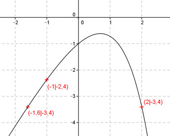
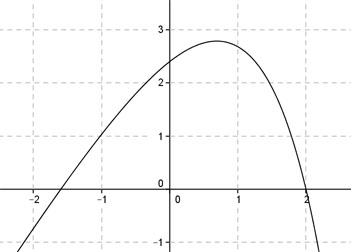

Aufgabe 121 Ergänzen Sie die Wertetabelle für den Graphen: y = 2x - ex x -1 -1,6 oder 2 y -2,4 -3,4 1 y = f(-1) = 2 * (-1) - e-1 = - 2 - --- = -2 - 0,37 = -2,4 gerundet e  An welchen Stellen x die Funktion den Wert -3,4 annimmt, ist elementar nicht zu ermitteln. Abgelesen: Es sind 2 Stellen. Zur Berechnung wendet man ein Näherungs- verfahren an, hier die Regula falsi. fx = -3,4 eingesetzt : -3,4 = 2 * x - ex | +3,4 2 * x - ex + 3,4 = 0 Als Funktion: y = 2 * x - ex + 3,4  x0 = gesuchte Nullstelle x1 * |y(x2)| + x2 * |y(x1)| x0 = ------------------------------ |y(x1)| + |y(x2)| Abgelesen: Nullstelle zwischen -2 und -1 und zwischen 1,5 und 2,5. Nullstelle x0 zwischen -2 und -1 mit Excel ermittelt: A B C D E F G H I J -2 -1 1,0321 0,7354 -2,0642 -0,7354 -2,7995 1,7674 -1,5839 0,0269 -2 -1,5839 0,0269 0,7354 -0,0538 -1,1648 -1,2186 0,7623 -1,5986 0,0005 -2 -1,5986 0,0005 0,7354 -0,0011 -1,1756 -1,1766 0,7359 -1,5989 0,0000 -2 -1,5989 0,0000 0,7354 0,0000 -1,1758 -1,1758 0,7354 -1,5989 0,0000 Die gesuchte Nullstelle ergibt sich nach mehreren Näherungen mit ausreichender Genauigkeit zu x01 = -1,6 gerundet. Weitere Erläuterungen zur Tabelle siehe Aufgabe 101. Die Nullstelle zwischen 1,5 und 2,5 ergibt sich nach dem selben Verfahren zu x02 = 2 gerundet.